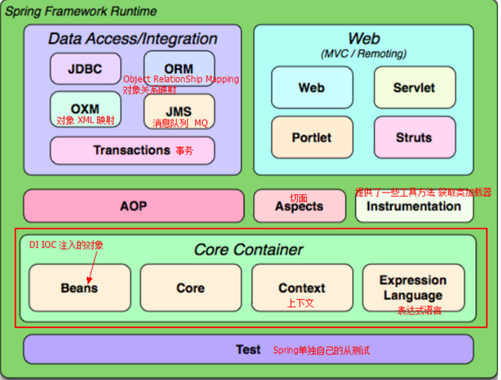

原文出处:本文由博客园博主lookroot提供。
原文连接:https://www.cnblogs.com/lookroot/p/11609689.html
原文连接:https://www.cnblogs.com/lookroot/p/11609689.html
spring基础
Spring是一个开放源代码的设计层面框架，他解决的是业务逻辑层和其他各层的松耦合问题，因此它将面向接口的编程思想贯穿整个系统应用
IOC控制反转
把创建对象和维护对象之间的关系权利转交给spring管理，spring容器控制对象的创建，注入需要注入的对象
aop面向切面编程
通过预编译方式和运行期动态代理实现程序功能的统一维护的一种技术
隔离业务逻辑，降低耦合度，提高可用性和开发效率，主要用于日志记录，事务管理，异常处理等等
模块化
3.0版本后，根据需要引入模块需要的包，进行模块开发

小demo
测试配置文件
创建对象
@Data
public class Person {
private String name;
}创建配置文件,为了方便测试放在同级目录下
<?xml version="1.0" encoding="UTF-8"?>
<beans xmlns="http://www.springframework.org/schema/beans"
xmlns:xsi="http://www.w3.org/2001/XMLSchema-instance"
xsi:schemaLocation="http://www.springframework.org/schema/beans http://www.springframework.org/schema/beans/spring-beans.xsd">
<bean id="person" class="top.lzxw.demo01.Person" name="person">
</bean>
</beans>创建测试方法
public class SpringDemoTest {
@Test
public void tes01() {
//实例化管理对象
ClassPathResource resource = new ClassPathResource("/top/lzxw/demo01/spring-config.xml");
XmlBeanFactory factory = new XmlBeanFactory(resource);
//1根据id创建
Person u = (Person) factory.getBean("person");
u.setName("lili");
System.out.println(u);
}
}三种获取实例化的方式，上面已经写了一种
//2根据name和class
Person person = factory.getBean("person2", Person.class);
person.setName("lili");
//3直接根据字节码 但是配置文件必须唯一,一个对象配置多个bean的话，spring会无法选择
Person bean = factory.getBean(Person.class);
System.out.println(person);
Application和BeanFactory
- 创建对象的时机是
- ApplicationContext在创建工厂的时候就会把bean实例化，优先加载
- BeanFactory使用对象时才会实例化
- 关系
- ApplicationContext实现BeanFactory
- ApplicationContext更强大
- ApplicationContext实现懒加载
- 全局：default-lazy-init="true"
单独节点： lazy-init="true"
spring测试
spring测试可以在不启动spring项目情况下进行单元测试
@ContextConfiguration("spring-config.xml")
@RunWith(SpringJUnit4ClassRunner.class)
public class SpringTest {
@Autowired
Person person;
@Test
public void test() {
person.setName("lili");
System.out.println(person);
}
}singletonAndprototype
<bean id="person" class="top.lzxw.singletonAndprototype.Person" scope="prototype"/>
scope prototype多例 singleton单例
public class SpringTest {
@Test
public void test() {
ApplicationContext ac=new ClassPathXmlApplicationContext("top/lzxw/singletonAndprototype/spring-config.xml");
Person person1= (Person) ac.getBean("person");
Person person2= (Person) ac.getBean("person");
//单例的话就是同一个对象
System.out.println(person1==person2);//true
}
}bean与bean之间的关系
继承
- 通过parent指定继承
- 有abstract属性的bean不能被实例化
子bean可以覆盖父bean
依赖
- 可以通过depends-on="其他beani定依赖关系
- 如果依赖了abstract的bean也不能实例化
<!-- 模板bean -->
<bean id="p" class="top.lzxw.beanAndBean.Person" abstract="true">
<property name="name" value="张三"></property>
</bean>
<bean id="person" class="top.lzxw.beanAndBean.Person" parent="p"/>
<bean id="person2" class="top.lzxw.beanAndBean.Person" parent="p">
<property name="name" value="子覆盖了"></property>
</bean> @Test
public void test() {
ApplicationContext ac=new ClassPathXmlApplicationContext("top/lzxw/beanAndBean/spring-config.xml");
Person person= (Person) ac.getBean("person");
System.out.println(person);
Person person2= (Person) ac.getBean("person2");
System.out.println(person2);
}生命周期
基本声明周期
<!-- 生命周期
构造方法
getset
init-method 初始化
destroy-method 销毁
-->
<bean id="person" class="top.lzxw.beancycle.Person" init-method="init" destroy-method="destory"/>bean
@Data
public class Person {
private String name;
public Person() {
System.out.println("构造方法调用了");
}
private void init() {
System.out.println("--init--");
}
private void destory() {
System.out.println("--destory--");
}
}补充周期
<!--
实现BeanPostProcessor 细致的声明周期
postProcessBeforeInitialization 初始化方法之前
postProcessAfterInitialization 初始化方法之后
-->
<bean id="personBeanPostProcessor" class="top.lzxw.beancycle.PersonBeanPostProcessor"/>实现接口
public class PersonBeanPostProcessor implements BeanPostProcessor {
@Override
public Object postProcessBeforeInitialization(Object o, String s) throws BeansException {
System.out.println("postProcessBeforeInitialization");
return o;
}
@Override
public Object postProcessAfterInitialization(Object o, String s) throws BeansException {
System.out.println("postProcessAfterInitialization");
return o;
}
}测试
@Test
public void test() {
ClassPathXmlApplicationContext ca=new ClassPathXmlApplicationContext("top/lzxw/beancycle/spring-config.xml");
Person person= (Person) ca.getBean("person");
ca.close();
}注入测试
spring原生注入方式实现三层架构
dao
public class TestDao {
public int add() {
return 1;
}
}service
public interface TestService {
String add();
}@Data
public class TestServiceImpl implements TestService {
private TestDao testDao;
@Override
public String add() {
return testDao.add()==1?"添加成功":"添加失败";
}
}controller
@Data
public class TestController {
private TestService testService;
public String add() {
return testService.add();
}
}配置文件
<beans xmlns="http://www.springframework.org/schema/beans"
xmlns:xsi="http://www.w3.org/2001/XMLSchema-instance"
xsi:schemaLocation="http://www.springframework.org/schema/beans http://www.springframework.org/schema/beans/spring-beans.xsd">
<!-- set注入 -->
<bean id="testController" class="top.lzxw._01.controller.TestController">
<property name="testService" ref="testService"/>
</bean>
<bean id="testService" class="top.lzxw._01.service.impl.TestServiceImpl">
<property name="testDao" ref="testDao"/>
</bean>
<bean id="testDao" class="top.lzxw._01.dao.TestDao"></bean>
</beans>test
@RunWith(SpringJUnit4ClassRunner.class)
@ContextConfiguration("/spring-config.xml")
public class MyTest {
@Autowired
private TestController testController;
@Test
public void test01() {
String result = testController.add();
System.out.println(result);
}
}
测试结果
注入BasicDataSource
<beans xmlns="http://www.springframework.org/schema/beans"
xmlns:xsi="http://www.w3.org/2001/XMLSchema-instance"
xmlns:context="http://www.springframework.org/schema/context"
xsi:schemaLocation=" http://www.springframework.org/schema/beans http://www.springframework.org/schema/beans/spring-beans.xsd
http://www.springframework.org/schema/context
http://www.springframework.org/schema/context/spring-context-4.2.xsd
">
<context:property-placeholder location="classpath:db.properties"/>
<!-- 配置一个DBCP的Bean -->
<bean name="dateSource" class="org.apache.commons.dbcp.BasicDataSource"
destroy-method="close">
<!-- 注意：这里我们不是使用的ref引用，而是直接写的value，因此注入的数据是一个变通的值 -->
<property name="driverClassName" value="${jdbc.driver}"/>
<property name="url" value="${jdbc.url}"/>
<property name="username" value="${jdbc.username}"/>
<property name="password" value="${jdbc.password}"/>
</bean>
</beans>db.properties
jdbc.driver=com.mysql.cj.jdbc.Driver
jdbc.url=jdbc:mysql://localhost:3306/jdbcwork?useSSL=false&serverTimezone=UTC
jdbc.username=xxx
jdbc.password=xxx测试
@RunWith(SpringJUnit4ClassRunner.class)
@ContextConfiguration("spring-config.xml")
public class DataSourceTest {
@Autowired
BasicDataSource basicDataSource;
@Test
public void test01() {
try {
Connection connection = basicDataSource.getConnection();
connection.close();
} catch (SQLException e) {
e.printStackTrace();
}
}
}无报错测试通过
其他注入
@Data
@AllArgsConstructor
@NoArgsConstructor
public class Person {
private String username;
private Car car;
private String[] strings;
private List<String> list;
private Set<String> set;
private List<Wife> wifeList;
private Properties p1;
private Properties p2;
}<beans xmlns="http://www.springframework.org/schema/beans"
xmlns:xsi="http://www.w3.org/2001/XMLSchema-instance" xmlns:util="http://www.springframework.org/schema/util"
xsi:schemaLocation="http://www.springframework.org/schema/beans http://www.springframework.org/schema/beans/spring-beans.xsd http://www.springframework.org/schema/util http://www.springframework.org/schema/util/spring-util.xsd">
<!-- 外部bean注入 -->
<bean id="car" class="top.lzxw._05other.Car">
<property name="price" value="1.0"/>
<property name="type" value="bwm"/>
</bean>
<bean id="person" class="top.lzxw._05other.Person">
<property name="username" value="张三"/>
<property name="car" ref="car"/>
</bean>
<!-- 内部bean定义 -->
<bean id="person2" class="top.lzxw._05other.Person">
<property name="username" value="张三"/>
<property name="car">
<bean class="top.lzxw._05other.Car">
<property name="price" value="1.0"/>
<property name="type" value="bwm"/>
</bean>
</property>
</bean>
<!-- 其他类型的注入 -->
<bean id="person3" class="top.lzxw._05other.Person">
<property name="username" value="张三"/>
<property name="car">
<bean class="top.lzxw._05other.Car">
<property name="price" value="1.0"/>
<property name="type" value="bwm"/>
</bean>
</property>
<!-- 数组 -->
<property name="strings" value="lili,keke"/>
<!-- 集合 -->
<property name="list">
<list>
<value>1</value>
<value>2</value>
<value>3</value>
</list>
</property>
<!-- set -->
<property name="set">
<set>
<value>k</value>
<value>e</value>
<value>w</value>
</set>
</property>
<!-- 泛型 -->
<property name="wifeList">
<list>
<bean class="top.lzxw._05other.Wife">
<property name="username" value="lili"/>
</bean>
</list>
</property>
<!-- Properties注入-->
<property name="p1">
<value>proKey1=proValue1</value>
</property>
<property name="p2">
<props>
<prop key="键1">值1</prop>
</props>
</property>
</bean>
</beans>测试
public class OtherTest {
@Test
public void test01() {
ApplicationContext ac=new ClassPathXmlApplicationContext("/top/lzxw/_05other/spring-config.xml");
Person person= (Person) ac.getBean("person");
Person person2= (Person) ac.getBean("person2");
Person person3= (Person) ac.getBean("person3");
System.out.println(person);
System.out.println(person2);
System.out.println(person3);
}
}